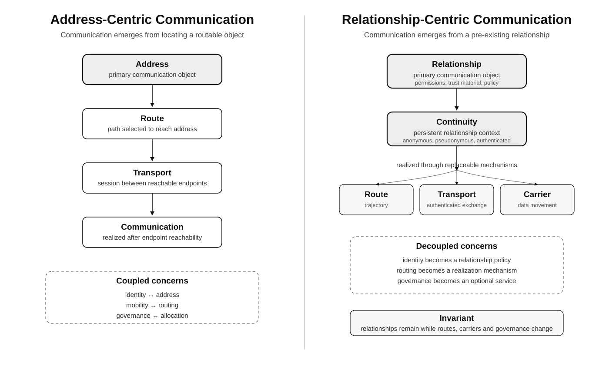
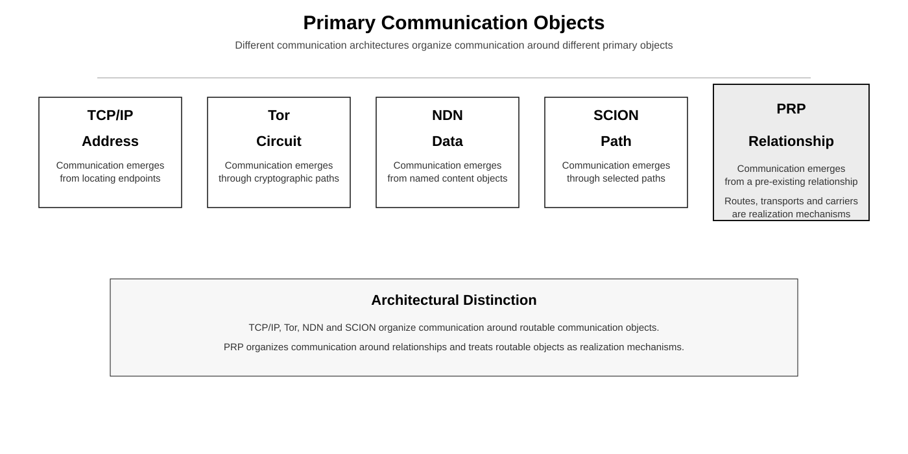
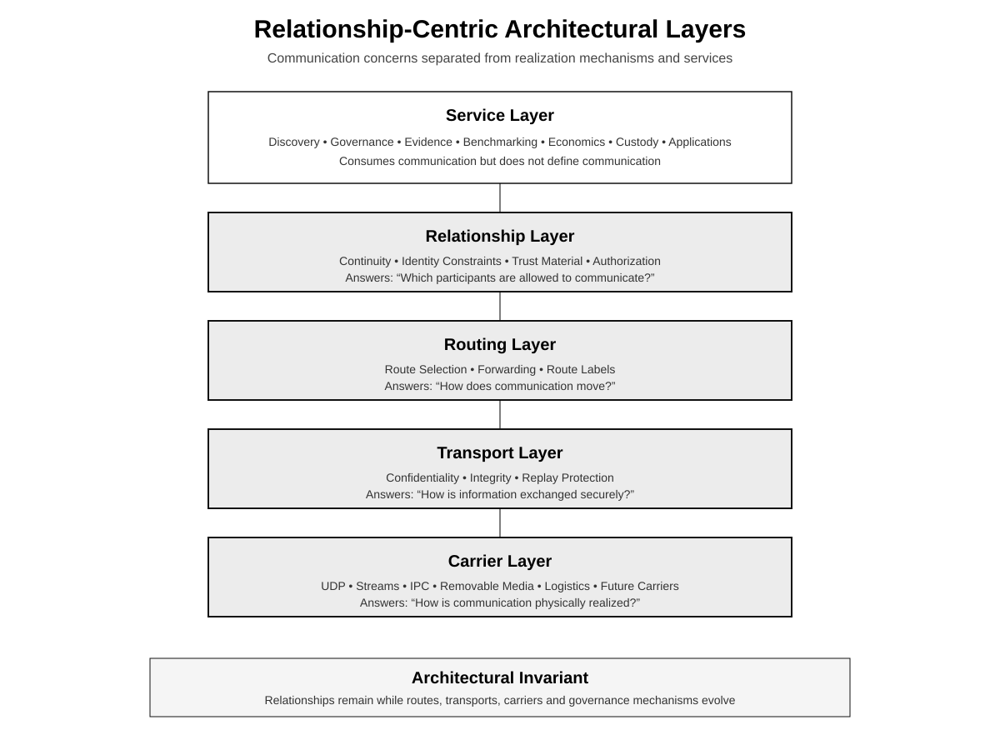

Relationship Layer
Defines communication contexts, continuity, identity constraints, trust material, and authorization.
Relationship-centric communication
PRP is a communication architecture in which communication becomes possible because a relationship already exists, not because a participant can be located through a globally coordinated address.

Communication becomes possible because a relationship already exists.
Architectural position
PRP separates communication continuity from address continuity. A relationship defines permissions, trust material, identity constraints, authorization boundaries, and the continuity needed for communication over time.
Routes, transports, and carriers are replaceable realization mechanisms. A relationship may survive changes in topology, carrier technology, governance participation, and participant location.
Primary objects

Architecture
Defines communication contexts, continuity, identity constraints, trust material, and authorization.
Defines communication trajectories used to realize a relationship without becoming participant identity.
Defines authenticated information exchange between participants inside a relationship context.
Moves communication data through packet networks, streams, intermittent media, logistics, or future carriers.

Design goals